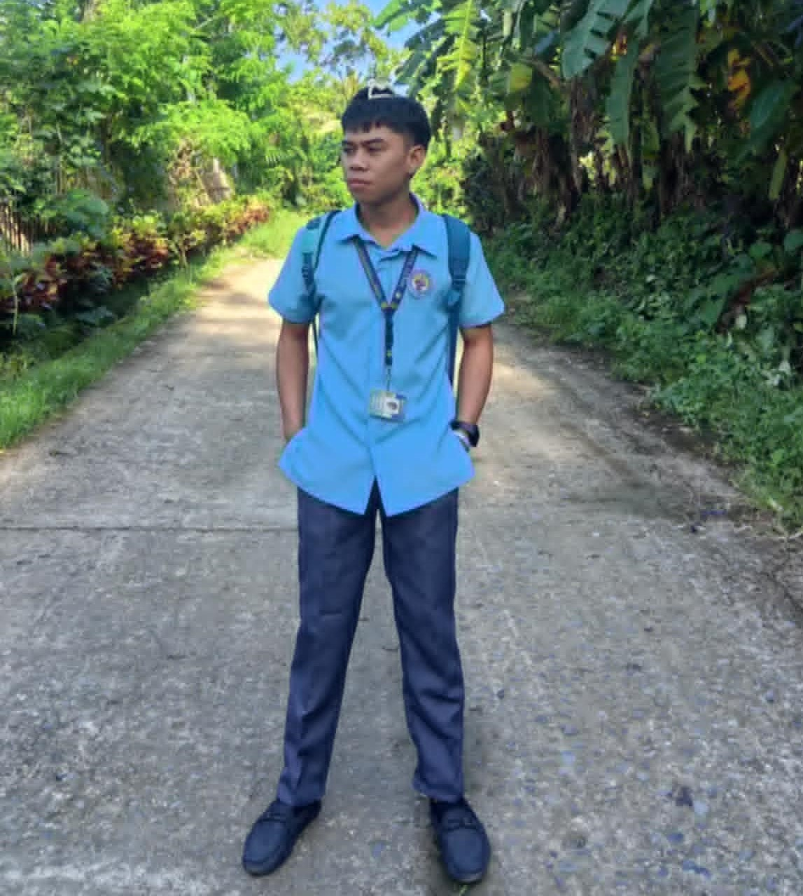
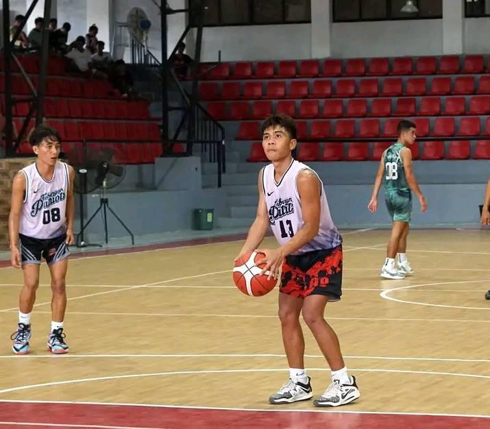

Welcome to My Portfolio

Welcome to my personal portfolio! Here you can learn more about me, my projects, and my hobbies. I am passionate about technology and design, and I strive to create impactful solutions that enhance user experiences.
About Me
Name:Arjay Arcenal
Address: [Your Address Here]
Sex:Male
Age:19
Graduated From:Lambunao natinaol highschool
strand/Course:(TVL) Technical vocational livilihood .(EPAS) Electronic Product Assembly and Servicing
Currently Studying:West Visayas State University
Course: Bachelor of Science in Information Technology
Year Level: 2nd Year
My Hobbies

In my free time, I enjoy a variety of hobbies that keep me balanced and inspired. Some of my favorite activities include:
- 🏀 Playing basketball, which I find to be both a great workout and a way to connect with friends. I enjoy the teamwork and strategy involved in the game, and I often participate in local leagues and pickup games. Basketball helps me stay fit and sharpens my competitive spirit. I also love watching professional games and following my favorite teams, which adds to my appreciation of the sport.
- 🏞️ Hiking and exploring nature to stay active and appreciate the outdoors.
- 📚 Reading books on technology and personal development, which helps me stay informed and motivated.
- 🎮 Playing video games to unwind and have fun, often exploring new worlds and stories.
- 🎨 Experimenting with graphic design and digital art, allowing me to express my creativity in different ways.